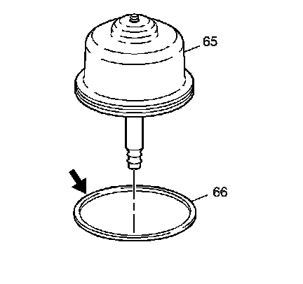
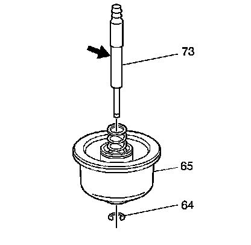
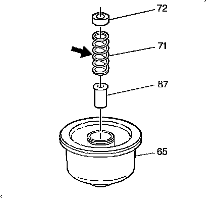
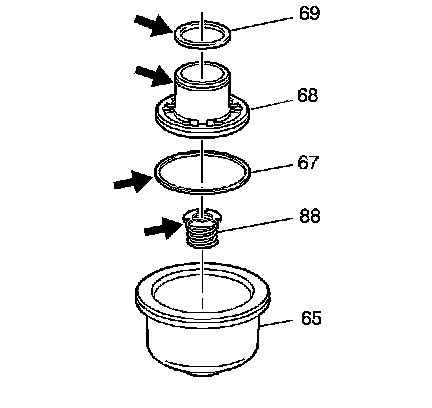

Low and Reverse Band Servo Assembly Disassemble
Low and Reverse Band Servo Assembly Disassemble

1. Remove the low and reverse band servo piston seal (66) from the low and reverse band servo piston (65).
2. Inspect the low and reverse band servo piston seal (66) for nicks and cuts.

3. Remove the low and reverse band servo piston pin retainer ring (64).
4. Remove the low and reverse band servo piston pin (73).
5. Inspect the low and reverse band servo piston pin (73) for wear.

6. Remove the low and reverse band servo piston spring retainer (72).
7. Remove the low and reverse band servo piston spring (71).
8. Inspect the low and reverse band servo piston spring (71) for distortion.
9. Remove the low and reverse band servo piston spacer (87).

10. Remove the 1-2 accumulator piston (68).
11. Remove the low and reverse accumulator piston oil seal rings (67, 69).
12. Remove the 1-2 accumulator piston spring assembly (88).
13. Inspect the low and reverse band servo piston (65) and the 1-2 accumulator piston (68) for porosity and damage.
14. Inspect the low and reverse accumulator piston oil seal rings (67, 69) for nicks and cuts.